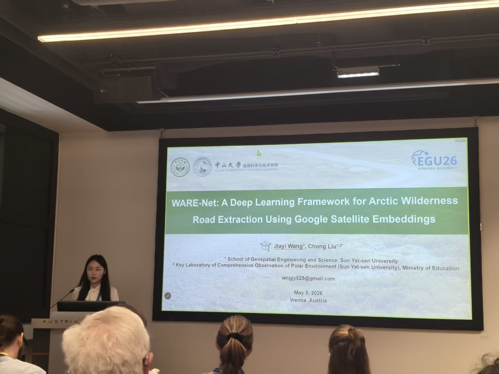
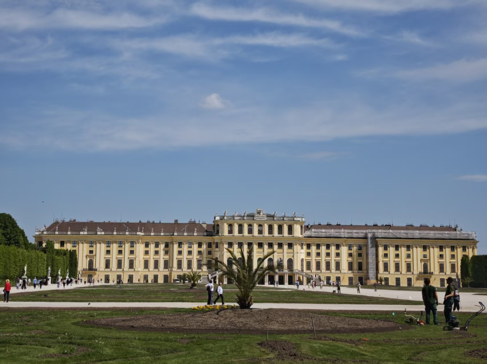

学术交流 · 2026 年 5 月 8 日 · 维也纳
课题组成员参加 EGU 2026 并作口头报告
硕士研究生王佳怡在 EGU 2026 分享北极荒野地区道路遥感提取研究，与国际同行就高纬度环境监测展开交流。

2026 年 5 月 3–8 日，欧洲地球科学联盟年会（European Geosciences Union General Assembly 2026，EGU 2026）在奥地利维也纳举行。课题组硕士研究生王佳怡参加会议并作口头报告，与来自不同国家和地区的专家学者进行了深入交流。
报告题为 “WARE-Net: A Deep Learning Framework for Arctic Wilderness Road Extraction Using Google Satellite Embeddings”。报告介绍了利用 Google Satellite Embeddings 与深度学习开展北极荒野地区道路提取的研究：通过提升复杂高纬度环境下道路识别的准确性与结构完整性，为基础设施制图和生态环境监测提供技术支持。
交流与展望
报告后，与会学者围绕遥感数据选择、模型设计，以及成果在北极环境监测中的应用展开讨论。相关建议将为后续完善模型结构、拓展研究区域并推动道路提取成果的实际应用提供参考。EGU 年会覆盖遥感、地理信息科学、冰冻圈科学、水文学、气候变化和生态环境等方向；此次参会帮助课题组进一步了解前沿进展，并拓宽国际学术视野。
